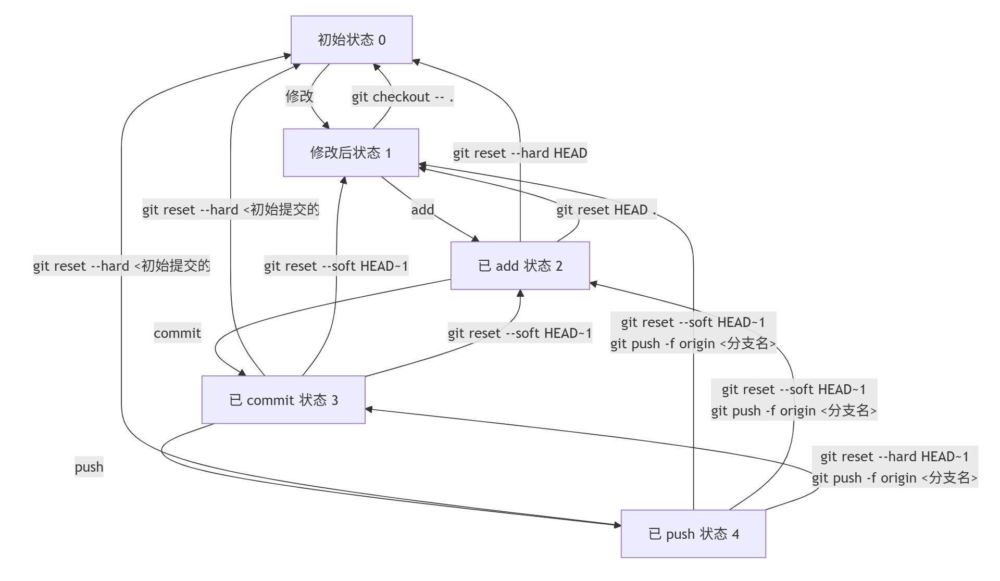

Git Notes
Git Notes
为什么我会写这篇博客，自然是因为偶尔会想不起来某些Git命令，又不想每次都上网查。对于一个在进入大学前完全没接触过代码、直到大一结束才第一次接触Git和Linux的人，这看起来似乎情有可原。但是！为了以防今后某些不正确的操作将自己的仓库甚至整个项目搞得一团糟，还是把我容易搞混的Git命令记录下来吧！
修改-添加到暂存区-提交-推送的状态转换
状态表示
- 设状态0为初始状态
- 工作区文件修改后为状态1
- 执行add将工作区修改添加到暂存区后为状态2
- 执行commit将暂存区的修改提交到本地仓库后为状态3
- 执行push将本地仓库的修改推送到远程仓库后为状态4
状态转换
状态转换图如下： 
各状态转换指令
1->0（修改后回到初始状态，不保留修改）1
git checkout -- .2->0（已add后回到初始状态，不保留修改）1
git reset --hard HEADgit reset --hard会将暂存区和工作区都重置为HEAD指向的提交版本，即丢弃暂存区和工作区的修改，回到初始状态。3->0（已commit后回到初始状态，不保留修改）1
git reset --hard [初始提交的哈希值]git log命令找到初始提交的哈希值，然后使用git reset --hard命令将当前分支重置到该提交，丢弃所有后续的提交和修改。4->0（已push后回到初始状态，不保留修改）1
2
3
4# 本地操作 git reset --hard [初始提交的哈希值] # 强制推送到远程仓库 git push -f origin [分支名]git reset --hard回到初始提交，然后使用git push -f强制将本地的修改推送到远程仓库，覆盖远程仓库的历史记录。2->1（已add后回到修改后状态，保留修改）1
git reset .3->1（已commit后回到修改后状态，保留修改）1
git reset --mixed HEAD~1git reset --mixed HEAD~1会撤销上一次提交，将提交的内容放回暂存区，同时保留工作区的修改。4->1（已push后回到修改后状态，保留修改）1
2
3
4# 本地操作 git reset --mixed HEAD~1 # 撤销远程仓库的推送 git push -f origin [分支名]git reset --mixed HEAD~1撤销上一次提交并将内容放回暂存区，然后使用git push -f强制推送到远程仓库，撤销远程仓库的推送。3->2（已commit后回到已add状态，保留修改）1
git reset --soft HEAD~1git reset --soft HEAD~1撤销上一次提交，将提交的内容放回暂存区。4->2（已push后回到已add状态，保留修改）1
2
3
4# 本地操作 git reset --soft HEAD~1 # 撤销远程仓库的推送 git push -f origin [分支名]4->1类似，先在本地撤销提交并将内容放回暂存区，然后强制推送到远程仓库撤销推送。4->3（已push后回到已commit状态，保留修改）1
2
3
4# 本地回退到上一个提交 git reset --hard HEAD~1 # 强制推送到远程仓库 git push -f origin [分支名]git reset --hard HEAD~1回退到上一个提交，然后使用git push -f强制推送到远程仓库，使远程仓库也回到上一个提交状态。
总结
| 状态转换 | 指令 |
|---|---|
| 1->0 | git checkout -- . |
| 2->0 | git reset --hard HEAD |
| 3->0 | git reset --hard [初始提交的哈希值] |
| 4->0 | git reset --hard [初始提交的哈希值] &&
git push -f origin [分支名] |
| 2->1 | git reset HEAD . |
| 3->1 | git reset --mixed HEAD~1 |
| 4->1 | git reset --mixed HEAD~1 AND
git push -f origin [分支名] |
| 3->2 | git reset --soft HEAD~1 |
| 4->2 | git reset --soft HEAD~1 AND
git push -f origin [分支名] |
| 4->3 | git reset --hard HEAD~1 AND
git push -f origin [分支名] |
取消跟踪
要停止跟踪已推送到远程仓库的文件，同时保留本地文件并从远程仓库删除它们，可以按照以下步骤操作：
- 确认
.gitignore文件配置
确保.gitignore文件中已正确添加要忽略的文件或目录路径。例如：1
2
3# .gitignore ignore_file.txt ignore_dir/ - 停止本地仓库跟踪这些文件
使用git rm --cached命令删除文件的跟踪状态（保留本地文件）：1
2git rm --cached ignore_file.txt git rm --cached -r ignore_dir/ # 递归删除目录 - 提交更改 将修改后的
.gitignore和文件删除操作提交到本地仓库：1
2git add .gitignore git commit -m "Stop tracking ignored files" - 推送到远程仓库
将提交推送到远程仓库，同步删除操作：1
git push origin [branch-name]
子模块
子模块是 Git 中的一种机制，用于在一个 Git 仓库中嵌套另一个 Git 仓库。它允许你将一个独立的 Git 仓库作为另一个仓库的子目录来管理。
- 子仓库的创建（正常创建）
1
2
3
4cd [path_to_submodule] git init git remote add origin [submodule-repository-url] git push -u origin master - 在主仓库中添加子模块
1
2
3
4git submodule add [repository-url] [path-to-submodule] git add .gitmodules [path-to-submodule] git commit -m "Add submodule" git push
提取部分文件到新仓库
- 安装
git-filter-repo工具（如果尚未安装）：1
pip install git-filter-repo - 复制现有仓库，使用以下命令提取特定目录或文件到一个新的分支：
1
2
3cp -r [existing-repo-path] [new-repo-path] cd [new-repo-path] git filter-repo --path [path/to/directory_or_file] --to-subdirectory-filter [new_subdirectory_name] - 创建一个新的仓库并将提取的内容推送到新仓库：
1
2git remote add origin [new-repository-url] git push -u origin master
修改commit信息
- 要修改最近一次提交的 commit 信息，可以使用以下命令：
1
git commit --amend -m "New commit message" - 如果需要修改更早的提交，可以使用
rebase命令：1
git rebase -i HEAD~npick改为reword，然后保存并退出编辑器。接下来，Git 会提示修改提交信息，修改后保存并退出编辑器即可。 - 如果需要修改远程仓库中的提交信息，可以使用
push命令强制推送：1
git push -f origin [branch-name]